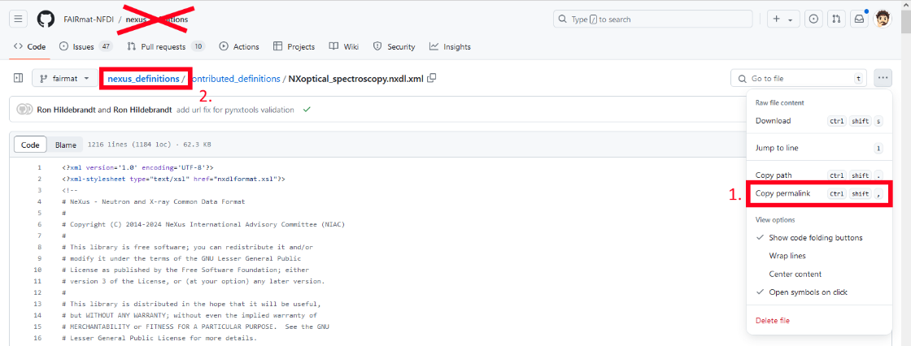

Use python to create NeXus files¶
The goal
Use python to create a NeXus file (.nxs) by hardcoding via the python package h5py. NeXus files can also be created by our software pynxtools automatically, but ONLY IF a reader for the specific device/instrument/data-structure exists. This How-To is intended as easy access to FAIR data structures via NeXus. For static-datastructures (i.e., always the same type of standard measurement) or one-time examples (small data publications), this may provide a feasible solution. For large scaled automated file processing, storage, and validation, it is advisable to use pynxtools and its measurement method specific plugins
You can find the necessary file downloads here.
Make NeXus file by python¶
Install h5py via pip:
Then you can create a NeXus file by the python script called h5py_nexus_file_creation.py.
# Import h5py, to write an hdf5 file
import h5py
# create a h5py file in writing mode with given name "NXopt_minimal_example", file extension "nxs"
f = h5py.File("NXopt_minimal_example.nxs", "w")
# there are only 3 fundamental objects: >group<, >attribute< and >datafield<.
# create a >group< called "entry"
f.create_group('/entry')
# assign the >group< called "entry" an >attribute<
# The attribute is "NX_class"(a NeXus class) with the value of this class is "NXentry"
f['/entry'].attrs['NX_class'] = 'NXentry'
# create >datafield< called "definition" inside the entry, and assign it the value "NXoptical_spectroscopy"
# This field is important, as it is used in validation process to identify the NeXus definition.
f['/entry/definition'] = 'NXoptical_spectroscopy'
This proves a starting point of the NeXus file. We will go through these functions in the following.
Add NeXus concepts by python¶
Go to FAIRmat NeXus definitions
Scroll down until you see the search box named "Quick search".
Type "NXoptical" and press start the search.
You see several search results, select the one with is named "NXoptical_spectroscopy".
Then you are (ideally) on this page: NXoptical_spectroscopy NeXus definition
You see a tree-like structure of the NeXus definition NXoptical_spectrosocopy with several tree nodes: Status, Description, Symbols, Groups_cited, Structure. For now, only the part in Structure is of interest. This contains the information which has to be written in the python code to add fields/groups/attributes to the NeXus file.
Use your browser search (CRTL+F) and search for "required". Ideally, your browser highlights all concepts which are required. You have to add those to the python script to extend your created .nxs file. (Which fields/groups/attributes are "required" was defined by the respective scientific community, to ensure that the data serves the FAIR principles.)
In the following, it will be shown how the python script has to be extended for the three fundamental objects:
-
Attribute
-
Datafield
-
Group
Adding an attribute¶
Search for the first concept/object in the NeXus file which is not created yet. It is:
@version: (required) NX_CHAR ⤆
-
It is located in the tree at position: ENTRY/definition/
-
The "@" indicates that this is an attribute of the concept "definition".
-
The name of the attribute is "version".
-
Since it is "required", that means this attribute has to be added so that the resulting NeXus file is compliant with the NeXus definition "NXoptical_spectroscopy".
-
The "NX_CHAR" indicates the datatype. This should be a string: "The preferred string representation is UTF-8" (more information see here)
Now the python script has to be extended in the following:
This h5py command adds the attribute named "version" with the value "v2024.02" to the HDF5 dataset called "/entry/definition". The same is done for the URL attribute:
f['/entry/definition'].attrs['URL'] = 'https://github.com/FAIRmat-NFDI/nexus_definitions/blob/f75a29836431f35d68df6174e3868a0418523397/contributed_definitions/NXoptical_spectroscopy.nxdl.xml'
For your use case, you may want to use a different version of the NeXus definitions, since these are changed over time. In the following, it is shown where to obtain the correct version and URL.
Get the values: version and URL
At the time, you create the NeXus definition. Go to the page of the respectively used NeXus concept, i.e. NXoptical_spectroscopy
Scroll down until you find "NXDL Source:" and follow this link, i.e. NXoptical_spectroscopy.nxdl.xml
This is the GitHub website, in which the latest (FAIRmat) NeXus definition of NXoptical_spectroscopy is stored in the NeXus definition language file (.nxdl). The information is structured in the xml format.
Now you have to copy the permalink of this file. Go to the top right side of the website. Find the Menu made by 3 dots:

Copy the permalink and insert it as value for the "URL" attribute (Step 1, Red box in the image)
Go to "nexus_definitions" (Step 2, Red box in the image)

On the right side, you should see below "Releases" the "tags" (Red box in the image). Follow this link.
Copy the latest tag, which should look similar to "v2024.02". Insert it as value for the "version" attribute.
Disclaimer
When specifying this version tag, it would be better to include the "GitHub commit id" as well. In this way, a pynxtools generated version tag might look like this:
v2022.07.post1.dev1278+g1d7000f4. If you have pynxtools installed, you can get the tag by:
>>> from pynxtools import get_nexus_version
>>> get_nexus_version()
'v2022.07.post1.dev1284+gf75a2983'
Adding a datafield¶
Two attributes were added to "ENTRY/definition", both of which were required. By now, this part of the NeXus file fulfills the requirements of the application definition NXoptical_spectroscopy.
The next required concept of NXoptical_spectrsocopy is "experiment_type".
experiment_type: (required) NX_CHAR
-
It is located in the tree at position: ENTRY/
-
There is no "@" in front of "experiment_type". So, this may be a group or a datafield.
-
The name of this group/datafield is "experiment_type".
-
The "required" indicates that this group/datafield has to be added to be in line with the NeXus definition "NXoptical_spectroscopy".
-
The "NX_CHAR" indicates the datatype. This should be a string: "The preferred string representation is UTF-8" (more information see here).
-
The "NX_CHAR" indicates that this is a datafield. It is NOT a group.
A group is a NeXus class. "NXentry" is for example a NeXus class, while "NX_CHAR" indicates the datatype of the field. Whether or not the underscore "_" is present after NX, indicates therefore if it is a NeXus class or datafield.
Read the documentation at "▶ Specify the type of the optical experiment. ..." by extending it via click on the triangle symbol. You should see something like this:
There, the value of the datafield has to be one of the shown list, since it is an enumeration (e.g. "transmission spectroscopy"). Note that this is case sensitive.
Therefore, the python script has to be extended by:
Adding a group¶
The first required group in NXoptical_spectroscopy on the "ENTRY/" level is "INSTRUMENT: (required) NXinstrument ⤆"
-
It is located in the tree at position: NXentry/
-
There is no "@" in front of "INSTRUMENT" and because the "NXinstrument" is a NeXus class, this has to be implemented as group in the python script.
-
The "required" indicates that this group has to be added to be in line with the NeXus definition "NXoptical_spectroscopy".
-
The "NXinstrument" indicates that it is a NeXus class (or group in python), as it starts with "NX" - without an underscore "_". It can also not be found at the data types.
-
As this is a group, attributes or values may be assigned to it.
-
As this is a group, it can contain many datafields or groups.
-
The uppercase notation of "INSTRUMENT" means:
-
You can give INSTRUMENT almost any name, such as "abc" or "Raman_setup" (see "regex" or regular expression).
-
You can create as many groups with the class NXinstrument as you want. Their names have to be different.
-
For more information see the NeXus rules
-
The respective python code to implement a NXinstrument class (or equivalently in python group) with the name "experiment_setup_1" is:
f.create_group('/entry/experiment_setup_1')
f['/entry/experiment_setup_1'].attrs['NX_class'] = 'NXinstrument'
The first line creates the group with the name "experiment_setup_1".
The second line assigns this group the attribute with the name "NX_class" and its value "NXinstrument".
Finishing the NeXus file¶
This has to be done by using the respective NeXus definition website:
And by searching for all "required" entries. The next required entries are located inside the NXinstrument class:
-
detector_TYPE: (required) NXdetector ⤆
Both are groups. "beam_TYPE" could be named: "beam_abc" or "beam_Raman_setup". Use the knowledge above to extend the python script to create those NeXus file entries.
Note for required NeXus concepts
Above in the definition of NXoptical_spectroscopy, you as well may found a required entry "depends_on: (required) NX_CHAR ⤆". This is at the level of "ENTRY/reference_frames/beam_ref_frame". If you don't have the group "beam_ref_frame" because this is "optional", then you don't need to have this field.
Continue by validating the NeXus file
Feedback and contact¶
-
Best way is to contact the FAIRmat team directly by creating a Github Issue.
-
ron.hildebrandt(at)physik.hu-berlin.de